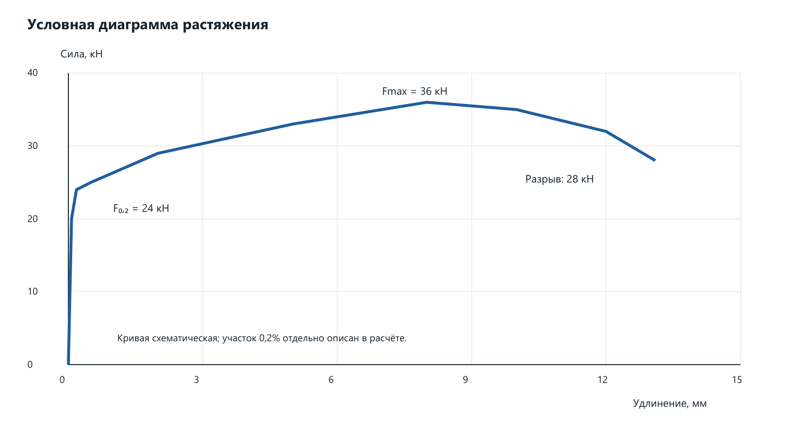
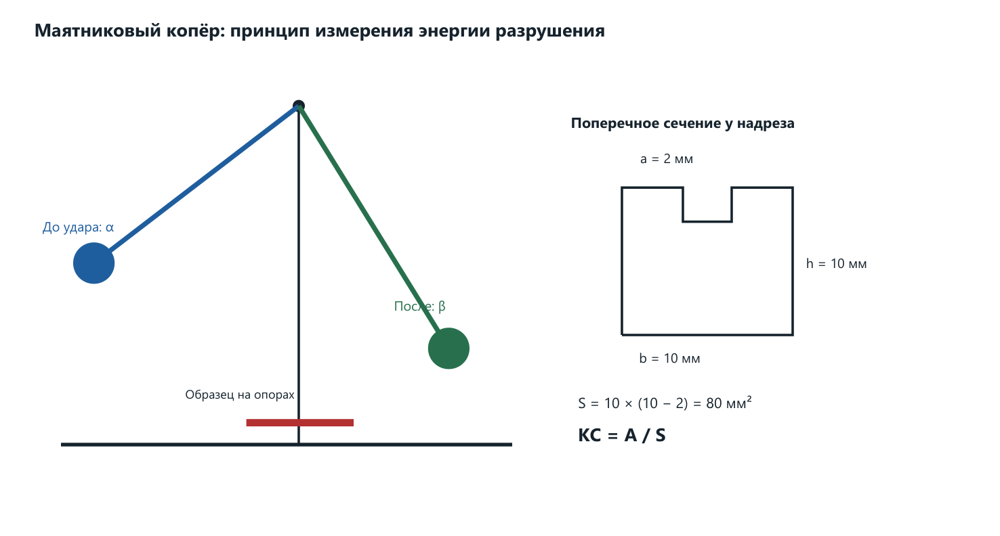
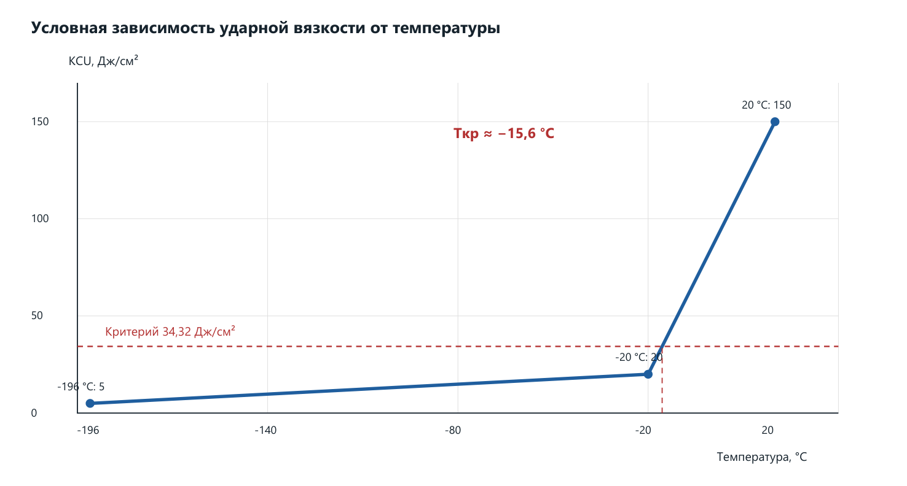
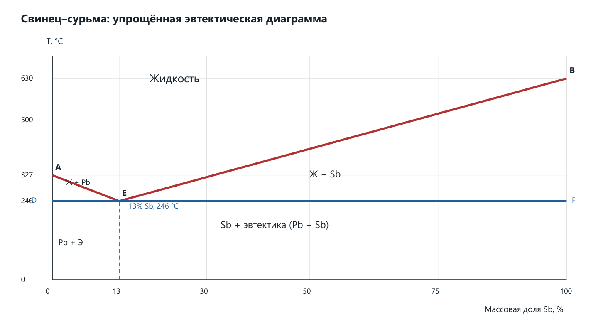
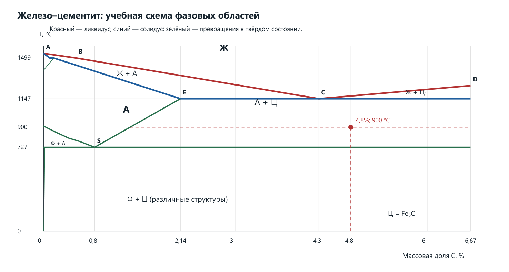
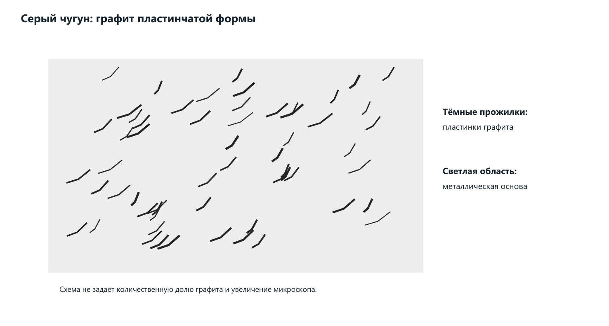
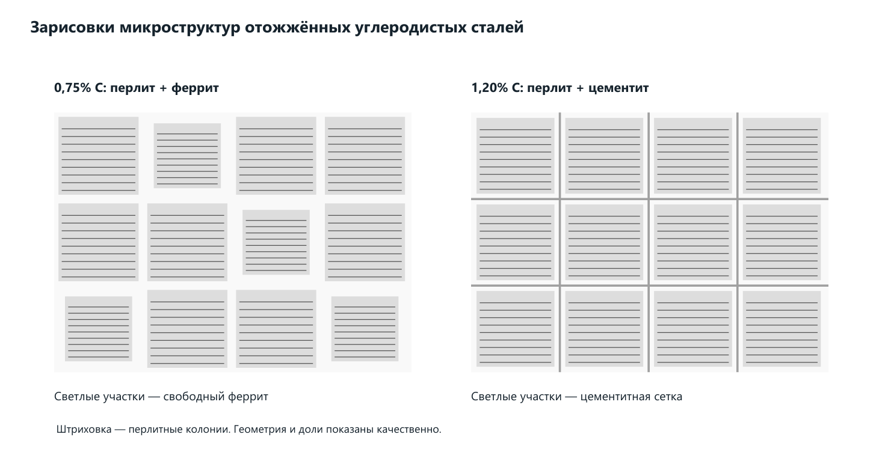
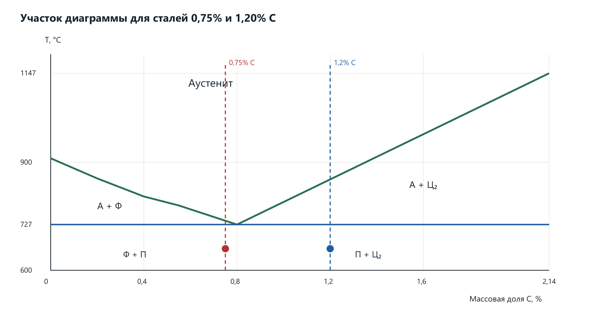
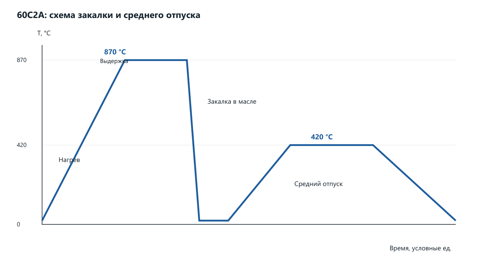

Материаловедение. Практические работы №1–16
Вариант 10 · Подробные решения, контрольные вопросы и выводы
Решения составлены по 35 присланным фотографиям. Номера фотографий в тексте соответствуют photo_1 … photo_35. Повтор одного разворота учтён.
В работах с распределением по группам выбран номер 10. В №3–5 отдельного числового варианта нет; выполнено общее задание. В №15 марки выбраны из общего перечня с привязкой к строке 10.
№3 и №4 содержат согласованные учебные примеры с условными данными. Реальные испытания и микроскопические исследования не проводились.
Два числа закрыты бликом: в №1, задаче 4.10 принято P = 1950 кгс; в №6, пункте а принято C = 3,0%. Пользователь разрешил продолжить с допущениями. Ответы в этих пунктах действуют для принятых чисел.
Неточности единиц твёрдости разобраны в №2. Неполная марка «Т30К» уточнена до Т30К4 по составу в той же методичке. Справочные и графические оценки помечены.
Все схемы выполнены специально для пояснения решений. Они не заменяют экспериментальные диаграммы или микрофотографии. Значения на наклонных линиях диаграмм приближённые.
Содержание
Практическая работа №1
Механические характеристики металлов и сплавов
Фото 1–2. Строка варианта 10: задачи 1.10, 2.10, 4.10, 7.10, 6.10.
Цель: Научиться рассчитывать удлинение, массу проволоки и предел прочности с согласованными единицами.
Задача 1.10. Относительное удлинение
Дано: начальная длина Lн = 920 мм; длина после разрыва Lк = 932 мм. Найти остаточное относительное удлинение δ.
δ = (Lк − Lн) / Lн × 100% = 12 / 920 × 100% = 1,304%.
Ответ: δ ≈ 1,30%. После разрушения длина образца увеличилась на 12 мм, то есть на 1,30% относительно исходной длины.
Задача 2.10. Масса проволоки
Дано: материал — золото Au; плотность ρ = 19,3 г/см³; длина L = 550 км; диаметр d = 1,5 мм. Проволока считается сплошным цилиндром постоянного диаметра.
S = πd² / 4 = π × 0,0015² / 4 = 1,767146 × 10⁻⁶ м².
V = SL = 1,767146 × 10⁻⁶ × 550 000 = 0,971930 м³.
m = ρV = 19 300 × 0,971930 = 18 758,25 кг.
Проверка в сантиметрах: d = 0,15 см; L = 55 000 000 см; V = 971 930,23 см³; m = 18 758 253,39 г = 18 758,25 кг. Ответ: масса приблизительно 18,76 т. Большой результат связан с длиной 550 км, указанной в таблице.
Задача 4.10. Предел прочности при растяжении
Дано: d = 5,2 мм. Ячейка нагрузки закрыта бликом. Для завершённого учебного примера принято P = 1950 кгс; это допущение, а не подтверждённое число с фотографии. Ниже оставлена также формула для любой фактической нагрузки P.
F = 9,80665P; при P = 1950 кгс: F = 19 122,97 Н.
σв = F / S₀ = 19 122,97 / 21,2372 = 900,45 Н/мм² = 900,45 МПа.
Ответ при принятой нагрузке: σв ≈ 900 МПа. Это максимальное условное напряжение, рассчитанное по исходному сечению. Если использовать учебное округление 1 кгс ≈ 10 Н, получится около 918 МПа; в основном расчёте использован точный коэффициент 9,80665.
Задача 7.10. Длина после разрыва
Дано: δ = 9%; Lн = 700 мм. Из определения относительного удлинения выразим конечную длину.
Lк = Lн(1 + δ / 100) = 700 × 1,09 = 763 мм.
Ответ: Lк = 763 мм. Проверка: (763 − 700) / 700 × 100% = 9%.
Задача 6.10. Первоначальная длина
Дано: δ = 6%; Lк = 800 мм. Найти длину образца до испытания.
Ответ: Lн ≈ 754,72 мм. Проверка: (800 − 754,717) / 754,717 × 100% = 6%. Делить на 1,06 необходимо потому, что проценты отнесены к начальной, а не конечной длине.
Ответы на контрольные вопросы
1. Механические свойства металлов? Прочность, упругость, пластичность, твёрдость, ударная вязкость, выносливость, сопротивление ползучести.
2. Что такое упругость? Способность восстанавливать форму и размеры после снятия нагрузки, пока не превышена область упругого поведения.
3. Чем характеризуется пластичность? Относительным остаточным удлинением δ и относительным сужением ψ после разрыва.
4. Как определяется предел прочности? σв = Fmax / S₀, где Fmax — наибольшая нагрузка при испытании, S₀ — исходное сечение.
5. К какой группе относятся плотность, электропроводность, температура плавления и теплопроводность? К физическим свойствам.
Вывод
Освоены расчёты по геометрическим размерам и нагрузке. Для варианта 10 получены δ = 1,30%, m = 18 758,25 кг, Lк = 763 мм и Lн = 754,72 мм. Предел прочности равен 900,45 МПа только при явно принятой нагрузке 1950 кгс.
Практическая работа №2
Определение и перевод твёрдости
Фото 3–5. Задача 1.10; во второй части строка 10: HV = 508.
Цель: Определить диаметр отпечатка по Бринеллю и сопоставить шкалы твёрдости.
Задание 1. Диаметр отпечатка
Дано по подписи таблицы: D = 5 мм; P = 250 кгс; HB = 165 МПа. В методичке смешаны размерное давление и традиционные числа твёрдости. Поэтому сначала решаем буквально в указанных МПа, а затем показываем распространённое прочтение 165 HB.
H = 2F / [πD(D − √(D² − d²))].
Обозначим b = 2F / (πDH). Тогда √(D² − d²) = D − b и d = √(2Db − b²).
d = √(2 × 5 × 1,891851 − 1,891851²) = 3,91656 мм.
Ответ при буквальном HB = 165 МПа: d ≈ 3,92 мм. Проверка подстановкой даёт 165 Н/мм². Отношение d/D = 0,783 велико для обычного испытания Бринелля; это ещё один признак проблем с единицами в условии.
Если автор таблицы имел в виду традиционное число 165 HB, сила 250 кгс подставляется вместе с числом твёрдости, выраженным через кгс/мм². Это другое прочтение исходных данных, его нельзя смешивать с первым.
d = √(2 × 5 × 0,192918 − 0,192918²) = 1,37548 мм.
165 кгс/мм² × 9,80665 = 1618,10 МПа.
Для обычного обозначения 165 HB получается d ≈ 1,38 мм и d/D = 0,275. Таким образом, 3,92 мм соответствует буквальной подписи «МПа», а 1,38 мм — обычному числу твёрдости 165 HB. Различие нельзя устранять молча.
Задание 2. Перевод HV = 508 по таблице методички
В таблице сопоставления на фото 4 находим строку HV = 508. В той же строке указаны HB = 461; HRC = 48; HRA = 75. Это именно табличное сопоставление, а не универсальные равенства.
| Исходное число HV | Число HB | HRC | HRA | Давление для HB, МПа |
|---|---|---|---|---|
| 508 | 461 | 48 | 75 | 461 × 9,80665 = 4520,87 |
В традиционных единицах давление для HV = 508 равно 508 × 9,80665 = 4981,78 МПа. Подпись «HV, МПа» в таблице вариантов не согласована с таблицей сопоставления: ряд 508 используется как традиционное число HV. Если понимать 508 буквально как МПа, это 51,80 в традиционной шкале, и для него в приложенной таблице нет строки.
Формула HRC = HB/10 и равенство HB = HV, напечатанные в примере, являются грубыми учебными приближениями. Здесь они дают 46,1 HRC вместо табличных 48 HRC. Для ответа принимаем непосредственно строку таблицы: 508 HV ≈ 461 HB ≈ 48 HRC ≈ 75 HRA.
Ответы на контрольные вопросы
1. В каких единицах выражают твёрдость Роквелла? В условных единицах соответствующей шкалы: HRA, HRB или HRC; это не МПа.
2. Что такое твёрдость? Сопротивление местной пластической деформации при внедрении более твёрдого тела — индентора.
3. Время приложения нагрузки по Виккерсу? В задачах этой методички принято 15 с. Режим испытания в реальной работе указывают вместе с нагрузкой.
4. Формула Виккерса? HV = 1,8544P/d² при P в кгс и средней диагонали d в мм; если F в ньютонах, традиционное число HV = 0,1891F/d².
5. Можно ли измерять твёрдость готовой детали? Можно, например методом Роквелла или переносным прибором, если допустим след индентора и соблюдены требования к поверхности, толщине и опоре.
6. Индентор Виккерса? Алмазная четырёхгранная пирамида с углом 136° между противоположными гранями.
7. Принцип Роквелла? Измеряют остаточную глубину внедрения после снятия основной нагрузки при сохранении предварительной.
8. Что означают HRA, HRB, HRC? A — алмазный конус, общая нагрузка 60 кгс; B — шарик 1/16 дюйма, 100 кгс; C — алмазный конус, 150 кгс. Предварительная нагрузка для этих обычных шкал — 10 кгс.
Вывод
Диаметр отпечатка найден с явным разделением двух трактовок единиц. По таблице методички для 508 HV получено 461 HB, 48 HRC и 75 HRA. Перевод между шкалами приближённый и зависит от материала; размерные давления и числа шкал нельзя подменять друг другом.
Практическая работа №3
Испытание металлов на растяжение
Фото 5–7. Отдельной таблицы вариантов нет.
Цель: Построить диаграмму растяжения, определить характеристики прочности и пластичности.
УЧЕБНЫЙ ПРИМЕР. Все числа протокола ниже условные, согласованные между собой. Испытания на машине и реальные измерения не проводились. Условный образец — сталь 20; числа не являются паспортными характеристиками этой марки.
Сущность и порядок испытания
Круглый образец закрепляют в захватах разрывной машины и плавно растягивают. Перед испытанием измеряют диаметр и расчётную длину, а при нагружении записывают силу и удлинение. После разрушения совмещают части образца и измеряют конечную расчётную длину и диаметр шейки.

| Величина | Обозначение | Условное значение |
|---|---|---|
| Начальный диаметр | d₀ | 10,00 мм |
| Начальная длина | L₀ | 50,00 мм |
| Нагрузка условного предела текучести | F₀,₂ | 24 000 Н |
| Максимальная нагрузка | Fmax | 36 000 Н |
| Нагрузка перед разрывом | Fk | 28 000 Н |
| Конечный диаметр шейки | dk | 6,50 мм |
| Длина после разрыва | Lk | 63,00 мм |
Расчёт площадей сечения
Sk = πdk² / 4 = π × 6,5² / 4 = 33,1831 мм².
Характеристики прочности
σв = Fmax / S₀ = 36 000 / 78,5398 = 458,37 МПа.
Sk(ист.) = Fk / Sk = 28 000 / 33,1831 = 843,81 МПа.
σk(услов.) = Fk / S₀ = 28 000 / 78,5398 = 356,51 МПа.
Истинное сопротивление разрыву больше условного, поскольку учитывает уменьшившуюся площадь шейки. Падение силы после максимума не означает, что истинное напряжение обязательно падает.
Характеристики пластичности
ψ = (S₀ − Sk) / S₀ × 100% = (1 − 6,5² / 10²) × 100% = 57,75%.
Графическое определение σ₀,₂
На оси удлинения откладывают остаточное удлинение 0,2% от L₀ и проводят прямую, параллельную начальному упругому участку диаграммы. Точка пересечения с кривой определяет F₀,₂. Для образца L₀ = 50 мм смещение равно 0,100 мм. При масштабе записи M = 100 мм диаграммы на 1 мм удлинения смещение на бумаге составляет 10 мм.
OB = MΔL₀,₂ = 100 × 0,100 = 10 мм.
Ответы на контрольные вопросы
1. Какими свойствами характеризуют конструкционные материалы? Прочностью, пластичностью, упругостью, вязкостью, твёрдостью и сопротивлением усталости; выбор зависит от условий детали.
2. Что такое прочность? Сопротивление разрушению и недопустимому деформированию под нагрузкой.
3. Что такое деформация? Изменение формы и размеров тела при внешнем воздействии.
4. Что такое упругая деформация? Обратимое изменение, исчезающее после разгрузки.
5. Что такое пластическая деформация? Необратимое изменение, сохраняющееся после снятия нагрузки.
6. Как пластическая деформация влияет на свойства при холодном наклёпе? Обычно повышает предел текучести и твёрдость и снижает запас пластичности.
7. Участки диаграммы растяжения? Упругое нагружение, начало текучести или условный переход к пластичности, упрочнение, локальная шейка и разрушение.
8. Почему пластическая деформация обычно требует возрастающей нагрузки? При деформации возникает наклёп: плотность дислокаций растёт, они взаимодействуют и препятствуют дальнейшему скольжению. Для продолжения деформации требуется большее напряжение; после образования шейки общая сила может уменьшаться.
9. Что такое наклёп? Упрочнение вследствие пластической деформации, связанное с ростом плотности и взаимодействием дислокаций.
10. Что такое напряжение? Внутреннее усилие, отнесённое к площади сечения. При одноосном растяжении условное нормальное напряжение σ = F/S₀.
11. Условные и истинные напряжения? Условное рассчитывают по исходной площади S₀, истинное — по текущей площади S.
12. Предел текучести, временное и истинное сопротивление разрыву? Предел текучести характеризует начало заметной пластической деформации; σв относится к максимальной силе; истинное сопротивление разрыву — к силе и площади непосредственно перед разрушением.
13. Что характеризуют δ и ψ? Способность материала к необратимому удлинению и уменьшению сечения до разрушения, то есть пластичность.
Вывод
В условном опыте σ₀,₂ = 305,58 МПа, σв = 458,37 МПа, истинное сопротивление разрыву 843,81 МПа, δ = 26%, ψ = 57,75%. Сочетание заметного удлинения и выраженной шейки соответствует пластическому характеру разрушения. Это учебная обработка данных, а не результат лабораторного испытания.
Практическая работа №4
Испытание на ударную вязкость
Фото 8–11. Отдельных числовых вариантов нет.
Цель: Рассчитать ударную вязкость и показать определение порога хладноломкости.
УЧЕБНЫЙ ПРИМЕР. Геометрия, энергии разрушения и доли вязкой составляющей ниже условные. Фотографии изломов и экспериментальные микроструктуры отсутствуют; словесные описания приведены как модель ожидаемого поведения.
Метод и формулы
Маятник копра разрушает стандартный образец ударом с противоположной надрезу стороны. Энергия, поглощённая образцом, определяется разностью потенциальной энергии до и после удара с учётом поправок прибора. Надрез создаёт концентрацию напряжений. Температура, размеры и форма надреза обязательно должны совпадать при сравнении результатов.
KC = A / S; S = b(h − a).
Здесь m — масса маятника, R — расстояние от оси до центра масс, α и β — углы подъёма до и после удара от нижней вертикали; b — ширина образца, h — высота, a — глубина надреза. Для U-надреза используют обозначение KCU. Принято b = 10 мм, h = 10 мм, a = 2 мм, поэтому S = 80 мм² = 0,80 см².

| T, °C | A₁; A₂; A₃, Дж | KCU₁; KCU₂; KCU₃, Дж/см² | Среднее KCU | Вязкая доля излома |
|---|---|---|---|---|
| +20 | 120; 124; 116 | 150; 155; 145 | 150 | 100% |
| −20 | 16; 18; 14 | 20; 22,5; 17,5 | 20 | 10% |
| −196 | 4; 5; 3 | 5; 6,25; 3,75 | 5 | 0% |
KCUср = (150 + 155 + 145) / 3 = 150 Дж/см².
При −20 °C: KCUср = (16 + 18 + 14) / (3 × 0,80) = 20 Дж/см².
При −196 °C: KCUср = (4 + 5 + 3) / (3 × 0,80) = 5 Дж/см².
Если протокол ведётся в кгс·м/см²: 1 кгс·м = 9,80665 Дж. Средние значения составляют 15,30; 2,039 и 0,510 кгс·м/см² соответственно. В кДж/м² это 1500; 200 и 50, так как 1 Дж/см² = 10 кДж/м².
Оценка порога хладноломкости
В методичке принят энергетический критерий KCU = 3,5 кгс·м/см². Переведём его в единицы нашего протокола и найдём пересечение с условной кривой. Взята линейная интерполяция только между −20 и +20 °C; для действительной температуры перехода нужны дополнительные опыты.
Tкр = −20 + (34,3233 − 20) / (150 − 20) × 40 = −15,59 °C.

Описание условных изломов: +20 °C — волокнистый вязкий излом с заметной пластической деформацией; −20 °C — преимущественно хрупкий, около 90% кристаллической составляющей; −196 °C — практически полностью хрупкий излом. Доли относятся к внешнему виду поверхности, а не к массовым долям фаз стали.
Ответы на контрольные вопросы
1. Характеристики пластической деформации? Необратимость после разгрузки, движение дислокаций, возможность наклёпа, изменения формы и размеров.
2. Назначение динамических испытаний? Оценить поведение при быстром приложении нагрузки, чувствительность к надрезу и склонность к хрупкому разрушению.
3. Как работает маятниковый копёр? Поднятый маятник получает запас потенциальной энергии, при падении разрушает образец и поднимается на меньшую высоту; по потере энергии определяют работу разрушения.
4. Что такое хладноломкость? Склонность материала при понижении температуры переходить от вязкого разрушения к хрупкому. Особенно характерна для ряда металлов и сплавов с ОЦК-решёткой; она не является одинаковой для всех металлов.
Вывод
В условном примере ударная вязкость снизилась со 150 до 5 Дж/см² при охлаждении от +20 до −196 °C. По критерию методички и линейной интерполяции получено Tкр ≈ −15,6 °C. Этот результат демонстрирует способ расчёта и не устанавливает реальные свойства неизвестной стали.
Практическая работа №5
Диаграмма состояния сплавов свинец–сурьма
Фото 11–12. Общее задание без таблицы вариантов.
Цель: Построить диаграмму эвтектического типа, обозначить ликвидус, солидус и структурные области.
Хотя заголовок упоминает три вида сплавов, конкретное задание требует систему Pb–Sb. Поэтому подробно построена именно она. Для схемы приняты учебные округления: Pb плавится при 327 °C, Sb — при 630 °C; эвтектика около 13% Sb и 246 °C. Твёрдая взаимная растворимость в этой упрощённой модели не учитывается. Учебная модель и состав эвтектики сверены с пособием ВНТУ [И1].

Обозначения и превращения
| Область или линия | Смысл |
|---|---|
| Выше A–E–B | Однородная жидкость Ж |
| Между A–E и 246 °C | Ж + кристаллы Pb |
| Между E–B и 246 °C | Ж + кристаллы Sb |
| Горизонталь D–E–F | Солидус; эвтектическое затвердевание при 246 °C |
| Ниже солидуса при Sb < 13% | Первичные кристаллы Pb + эвтектика (Pb + Sb) |
| 13% Sb | Эвтектическая структура Pb + Sb |
| Ниже солидуса при Sb > 13% | Первичные кристаллы Sb + эвтектика (Pb + Sb) |
Ликвидус A–E–B — граница, выше которой сплав полностью жидкий. Солидус D–E–F — граница окончания затвердевания. Эвтектическое превращение: Ж с 13% Sb → Pb + Sb при постоянной температуре. Эвтектика — совместно образовавшаяся мелкая смесь двух твёрдых фаз, а не самостоятельная третья фаза.
Примеры сплавов трёх групп и правило отрезков
Так как индивидуальные составы не заданы, для пояснения приняты 5, 13 и 30% Sb. Это иллюстративные составы, не скрытая замена варианта 10.
Доля первичного Pb = 100 − 38,46 = 61,54%.
13% Sb: эвтектика 100%.
30% Sb: доля первичного Sb = (30 − 13) / (100 − 13) = 19,54%.
Доля эвтектики = (100 − 30) / (100 − 13) = 80,46%.
При охлаждении 5%-го сплава сначала выделяется Pb; жидкость обогащается Sb, пока не достигнет эвтектического состава. Для 30%-го сплава сначала выделяется Sb, а жидкость обогащается Pb. Для 13%-го сплава всё затвердевание проходит при эвтектической температуре.
Ответы на контрольные вопросы
1. Что такое сплав и механическая смесь? Сплав — материал из двух или нескольких элементов с металлическими свойствами. Механическая смесь содержит несколько фаз, сохраняющих собственные решётки; компоненты не обязательно представляют собой отдельные чистые металлы.
2. В каких координатах строят диаграмму? По вертикали — температура; по горизонтали — состав, например массовая доля Sb от 0 до 100%.
3. Что такое химическое соединение? Фаза с упорядоченным соотношением элементов и собственной кристаллической структурой; пример в материаловедении — Fe₃C.
4. Какие основные типы строения сплавов? Твёрдый раствор, механическая смесь фаз и химическое соединение. В одном сплаве при разных температурах возможны разные сочетания фаз.
5. Как называются элементы, образующие сплав? Компоненты системы.
6. Каковы свойства сплава — химического соединения? Свойства отличаются от свойств исходных компонентов. Такие фазы часто обладают высокой твёрдостью и низкой пластичностью; имеют собственную кристаллическую решётку и определённое соотношение элементов. Пример — твёрдый и хрупкий цементит Fe₃C.
7. Какой тип обычно сохраняет способность металла к пластической деформации? Однофазный твёрдый раствор часто сохраняет заметную пластичность при повышенной прочности. Химические соединения нередко более хрупкие; конкретные свойства зависят от состава и структуры.
Вывод
На схеме Pb–Sb определены области жидкой и твёрдых фаз, линии начала и окончания кристаллизации, доэвтектические, эвтектические и заэвтектические составы. Правило отрезков позволяет количественно определить доли первичных кристаллов и эвтектики.
Практическая работа №6
Диаграмма состояния железо–цементит
Фото 12–15. Вариант 10: пункт б — 4,8% C и 900 °C.
Цель: Определить начало и окончание кристаллизации, фазовый и структурный состав железоуглеродистого сплава.
В пункте а число закрыто бликом; для законченного учебного решения принято C = 3,0%. Это допущение. Пункт б читается: C = 4,8%, T = 900 °C. Используется метастабильная диаграмма Fe–Fe₃C из методички: эвтектоид 0,8% C и 727 °C; эвтектика 4,3% C и 1147 °C; предельная растворимость C в аустените 2,14%; цементит 6,67% C. Здесь и далее подразумеваются равновесное или достаточно медленное охлаждение и отсутствие легирующих элементов.

Пункт а. Сплав с принятым содержанием 3,0% C
3,0% находится между 2,14 и 4,3%, поэтому это доэвтектический белый чугун в метастабильной системе. Вертикаль C = 3,0% пересекает ликвидус B–C и горизонталь эвтектики E–C–F. Выше ликвидуса сплав полностью жидкий; между ликвидусом и 1147 °C существуют жидкость и первичный аустенит.
Tликв ≈ 1499 − (1499 − 1147) × (3,0 − 0,51) / (4,3 − 0,51)
Tликв ≈ 1268 °C; Tсолид = 1147 °C.
Начало затвердевания при охлаждении — приблизительно 1270 °C; окончание — 1147 °C. При нагревании плавление начинается при 1147 °C и заканчивается около 1270 °C. Это графическая оценка по прямолинейному приближению ветви, а не точность до одного градуса.
Доля первичного А перед эвтектикой = (4,3 − 3,0) / (4,3 − 2,14) = 60,19%.
Доля образующегося ледебурита = (3,0 − 2,14) / (4,3 − 2,14) = 39,81%.
После затвердевания структура — первичный аустенит и ледебурит. При дальнейшем охлаждении из аустенита выделяется вторичный цементит, а при 727 °C аустенит превращается в перлит. При комнатной температуре: перлит + вторичный цементит + превращённый ледебурит.
Пункт б. Сплав 4,8% C при 900 °C
4,8% > 4,3%, поэтому сплав заэвтектический. При 900 °C точка ниже линии эвтектики, но выше 727 °C: жидкой фазы уже нет. Фазы — аустенит и цементит. Структурные составляющие удобно описать как первичный цементит и ледебурит с выделяющимся вторичным цементитом. Ледебурит сам является смесью фаз.
Для массовых долей проведём горизонталь 900 °C. Её правый конец соответствует цементиту 6,67% C, левый — аустениту на линии SE. По схематической диаграмме принято CА ≈ 1,35% C; погрешность графического считывания переносится в итоговые доли.
wЦ = (4,8 − 1,35) / (6,67 − 1,35) = 3,45 / 5,32 = 64,85%.
Проверка состава: 0,3515 × 1,35 + 0,6485 × 6,67 ≈ 4,80% C.
Тот же сплав при комнатной температуре
Аустенит распадается. Фазы — феррит и цементит; структурно — первичный цементит и превращённый ледебурит, содержащий перлит и цементит. При пренебрежении малой растворимостью углерода в феррите:
Первичный цементит: (4,8 − 4,3) / (6,67 − 4,3) × 100% = 21,10%.
Эвтектическая составляющая, то есть превращённый ледебурит: 78,90%.
71,96% — общая доля фазы цементита, а 21,10% — только доля цементита, выделившегося непосредственно из жидкости до эвтектики. Это разные величины, поэтому их нельзя сравнивать как альтернативные ответы.
Ответы на контрольные вопросы
1. Что такое диаграмма состояния? График равновесных фаз в зависимости от температуры и состава при заданном давлении.
2. Что вызывает фазовые превращения? Изменение термодинамически устойчивого состояния при изменении температуры, состава или давления; для железа важны полиморфизм и изменение растворимости углерода.
3. Границы стали и чугуна? В принятой диаграмме сталь содержит до 2,14% C, чугун — более 2,14%; рассматриваемый диапазон доходит до 6,67% C.
4. Феррит, аустенит, цементит, перлит и ледебурит? Феррит — раствор C в α-Fe с ОЦК-решёткой; аустенит — раствор C в γ-Fe с ГЦК-решёткой; цементит — Fe₃C; перлит — эвтектоидная смесь феррита и цементита; ледебурит — эвтектическая смесь аустенита и цементита, ниже 727 °C превращённая в смесь перлита и цементита.
5. Почему диаграмма заканчивается на 6,67%? Это содержание углерода в Fe₃C: 12/(3 × 55,85 + 12) × 100% ≈ 6,67%.
6. В каком виде присутствует углерод? В твёрдом растворе феррита и аустенита или химически связанным в цементите; в стабильной системе железо–углерод возможен графит.
7. Как определить доли фаз? В двухфазной области провести изотерму до границ и применить правило обратных отрезков. Сначала находят состав каждой фазы, затем её массовую долю.
8. Чем отличаются эвтектика и эвтектоид? Эвтектика возникает при распаде жидкости на две твёрдые фазы; эвтектоид — при распаде одной твёрдой фазы на две другие. В Fe–Fe₃C это ледебурит и перлит соответственно.
Вывод
Для принятого 3,0%-го сплава кристаллизация проходит примерно от 1270 до 1147 °C. Для подтверждённого состава 4,8% C при 900 °C получены фазы А + Ц с ориентировочными долями 35,15% и 64,85%. После медленного охлаждения до комнатной температуры остаются феррит и цементит, причём общее количество цементита составляет около 72%.
Практическая работа №7
Структурные составляющие стали и чугуна
Фото 16. Вариант 10: 0,55% C и 6,0% C.
Цель: Проследить первичную кристаллизацию и последующие превращения для двух заданных сплавов.
Сталь с 0,55% C
0,55% < 0,8%, следовательно, сталь доэвтектоидная. При охлаждении расплава сначала появляется аустенит. По упрощённым прямолинейным ветвям диаграммы начало кристаллизации около 1495 °C, окончание около 1430 °C. Затем в области однородного аустенита фазовое состояние не изменяется до линии GS.
Tсолид ≈ 1499 − 352 × (0,55 − 0,16) / (2,14 − 0,16) = 1430 °C.
Линия GS пересекается приблизительно при 780 °C: из аустенита начинает выделяться феррит. Ниже этой температуры структура А + Ф. При 727 °C остаточный аустенит эвтектоидного состава превращается в перлит. После охлаждения структура Ф + П. Приведённые высокотемпературные числа — оценки по схеме, а не результаты термического анализа.
wП = (0,55 − 0,02) / (0,8 − 0,02) = 67,95%.
wФ(избыточный) = 100 − 67,95 = 32,05%.
Белый чугун с 6,0% C
6,0% > 4,3%, поэтому чугун заэвтектический. При пересечении ликвидуса CD из жидкости выделяется первичный цементит. По прямолинейной оценке начало около 1230 °C. При 1147 °C оставшаяся жидкость превращается в ледебурит; первичная кристаллизация завершается.
wЦ₁ = (6,0 − 4,3) / (6,67 − 4,3) = 71,73%.
wЛ = (6,67 − 6,0) / (6,67 − 4,3) = 28,27%.
Ниже 1147 °C из аустенита ледебурита выделяется вторичный цементит. При 727 °C аустенит ледебурита распадается на перлит. Конечная структура: первичный цементит + превращённый ледебурит. Общая доля цементита при комнатной температуре, если пренебречь C в феррите, 6,0/6,67 = 89,96%; это объясняет очень высокую хрупкость.
| C, % | Кристаллизация | Превращения в твёрдом состоянии | Структура при 20 °C |
|---|---|---|---|
| 0,55 | Ж → Ж + А примерно при 1495 °C; Ж + А → А около 1430 °C | Около 780 °C: А → А + Ф; 727 °C: остаток А → П | Ф + П; доэвтектоидная сталь |
| 6,0 | Ж → Ж + Ц₁ около 1230 °C; 1147 °C: Ж → А + Ц (ледебурит) | Ниже 1147 °C: выделение Ц₂; 727 °C: А ледебурита → П | Ц₁ + Лпр; заэвтектический белый чугун |
Линии для нанесения разными цветами
На общей схеме из работы №6: ликвидус ABCD — начало кристаллизации; солидус AHJECF — её окончание, включая перитектический участок. Линии GS и PSK показывают превращения аустенита в стали при охлаждении; SE — выделение вторичного цементита. PQ относится к уменьшению растворимости C в феррите и выделению третичного цементита. В методичке «первичная кристаллизация» употребляется для затвердевания, а «вторичная» — для превращений уже твёрдого сплава.
Ответы на контрольные вопросы
1. Что такое феррит? Твёрдый раствор внедрения углерода в α-железе, сравнительно мягкая и пластичная фаза.
2. Решётка аустенита? Гранецентрированная кубическая, ГЦК.
3. Какая из фаз — феррит, аустенит или цементит — имеет твёрдость около HB 60? Феррит: это наиболее мягкая из перечисленных фаз. Значение около 60 HB — учебный ориентир; фактическая твёрдость зависит от примесей и состояния материала.
4. Содержание C в перлите и ледебурите? По принятой методичке перлит — около 0,8%, ледебурит — 4,3%.
5. Свойства твёрдого раствора? Это однородная фаза; легирование обычно упрочняет металл, при этом часто сохраняется пластичность. Конкретные значения определяются составом и решёткой.
Вывод
Сталь 0,55% C после медленного охлаждения имеет феррито-перлитную структуру и сохраняет заметную пластичность. Чугун 6,0% C содержит очень много цементита, поэтому отличается высокой твёрдостью и хрупкостью. Температуры на наклонных линиях определены приближённо по схеме.
Практическая работа №8
Химико-термическая обработка: азотирование
Фото 17. Варианты 1–10 — азотирование.
Цель: Охарактеризовать диффузионное насыщение поверхности стали азотом и его назначение.
Азотирование — химико-термическая обработка, при которой поверхностный слой насыщают азотом. Атомарный азот диффундирует в сталь и образует твёрдые нитриды, особенно с алюминием, хромом, молибденом и ванадием. Благодаря этому повышаются твёрдость, сопротивление износу и усталости; некоторые режимы повышают коррозионную стойкость.
| Пункт таблицы | Характеристика азотирования |
|---|---|
| 1. Сущность | Диффузионное насыщение поверхности азотом с образованием нитридного слоя и диффузионной зоны |
| 2. Цель | Высокая поверхностная твёрдость и износостойкость при сохранении прочной и вязкой сердцевины |
| 3. Температура | Обычно 500–600 °C; для выбранного примера 38Х2МЮА — около 520–560 °C |
| 4. Среда | Газовая среда на основе аммиака; также возможно ионное азотирование в азотсодержащей плазме |
| 5. Степень насыщения | Не задаётся одной универсальной долей азота: концентрация изменяется по глубине. В наружном слое возможны γ′-Fe₄N и ε-Fe₂–₃N |
| 6. Продолжительность | Для длительного газового процесса ориентировочно 20–60 ч; зависит от глубины и режима |
| 7. Глубина | Для упрочняющего газового азотирования ориентировочно 0,3–0,6 мм |
| 8. Качество стали | Нужна сталь с контролируемым составом; эффективны специальные легированные марки с нитридообразующими элементами |
| 9. Марки | 38Х2МЮА, 40Х, 40ХФА; режим и достигаемые свойства для них различаются |
| 10. Обработки | Улучшение сердцевины: закалка и высокий отпуск; механическая обработка; при необходимости снятие напряжений; азотирование; лёгкая доводка |
| 11. Детали | Зубчатые колёса, валы, шпиндели, гильзы, штоки |
Температура 500–600 °C и ориентир глубины 0,3–0,6 мм сверены с учебным материалом ТПУ [И2]. Выбранные выдержка и более узкий температурный интервал являются учебными ориентирами; промышленный режим зависит от материала и толщины слоя.
Пример маршрута для вала из 38Х2МЮА
1) Заготовку подвергают закалке и высокому отпуску для получения прочной сердцевины. 2) Выполняют основную механическую обработку. 3) При необходимости снимают напряжения при температуре выше последующего азотирования. 4) Насыщают поверхность азотом примерно при 540 °C. 5) Охлаждают в контролируемой среде и выполняют минимальную доводку. После самого азотирования обычная закалка не требуется: поверхность упрочняется нитридами.
Ответы на контрольные вопросы
1. Основные виды ХТО? Цементация, азотирование, цианирование, нитроцементация, борирование, диффузионное хромирование, алитирование и силицирование.
2. Как действует карбюризатор? При цементации он создаёт среду, обеспечивающую поступление активного углерода к поверхности и дальнейшую диффузию в сталь. Это термин для цементации, а не для азотирования.
3. Цель поверхностного упрочнения металлорежущих элементов? Повысить твёрдость, износостойкость и стойкость режущей поверхности, сохранив достаточную прочность и вязкость остальной части инструмента. Конкретный способ выбирают с учётом материала инструмента и температуры резания.
4. Способы цементации? Твёрдая, газовая, жидкостная; также вакуумная цементация углеводородами.
5. Общее назначение ХТО? Локально изменить химический состав и свойства поверхности, не превращая всю деталь в столь же твёрдый и хрупкий материал.
Вывод
Для варианта 10 рассмотрено азотирование. Оно обеспечивает твёрдый износостойкий слой за счёт диффузии азота и образования нитридов. Основные преимущества — малая деформация по сравнению с последующей закалкой цементованной детали и сочетание твёрдой поверхности с предварительно упрочнённой сердцевиной.
Практическая работа №9
Микроструктура, марки и применение чугуна
Фото 18–19. Варианты 1–20 — серый чугун.
Цель: Опознать графитовую форму, объяснить свойства серого чугуна и расшифровать обозначения.
Микрошлиф и структура
Микрошлиф — вырезанный, отшлифованный и отполированный образец, предназначенный для исследования под микроскопом; для выявления металлической основы его обычно травят. На нетравлёном шлифе серого чугуна графит выглядит как тёмные пластинки или изогнутые прожилки. После травления различают ферритную, феррито-перлитную или перлитную основу.

Серый чугун — железоуглеродистый сплав, в котором значительная часть углерода выделена в виде пластинчатого графита. Пластинки концентрируют напряжения, поэтому сопротивление растяжению и пластичность относительно невелики. При этом материал хорошо гасит колебания, имеет хорошие литейные свойства и обрабатываемость, применяется для жёстких корпусных деталей.
Пять деталей из серого чугуна
| Деталь | Почему подходит |
|---|---|
| Станина станка | Жёсткость, способность гасить вибрации, получение сложной отливки |
| Блок цилиндров | Литейность и износостойкость; марка и конструкция выбираются по условиям работы |
| Корпус редуктора | Сложная форма и работа преимущественно как жёсткого корпуса |
| Тормозной барабан или диск | Теплоотвод и фрикционные свойства подходящей марки |
| Шкив | Хорошая обрабатываемость и возможность литья сложной геометрии |
Пример обозначения СЧ20: СЧ — серый чугун, число 20 соответствует минимальному временному сопротивлению растяжению порядка 200 МПа. Оно не означает 20% углерода. На фотографиях встречаются старые двухчисловые обозначения СЧ18–36, СЧ24–44 и подобные; они относятся к прежней системе и не должны автоматически расшифровываться как современные обозначения.
Десять обозначений элементов в марках легированных чугунов
| Элемент | Символ | Буква в марке |
|---|---|---|
| Марганец | Mn | Г |
| Никель | Ni | Н |
| Титан | Ti | Т |
| Кремний | Si | С |
| Медь | Cu | Д |
| Алюминий | Al | Ю |
| Молибден | Mo | М |
| Хром | Cr | Х |
| Ванадий | V | Ф |
| Вольфрам | W | В |
Важная поправка к списку на фото: «Ш» в конце марки чугуна означает шаровидный графит, а не массовую долю магния. Магний может применяться при модифицировании. «У» — не универсальное обозначение легирующего углерода в марках специальных чугунов.
Два легированных чугуна из таблицы
| Марка | Расшифровка и свойства | Применение |
|---|---|---|
| ЧХ16 | Хромистый чугун; Х16 указывает ориентировочно 16% Cr. В методичке: σв около 350 МПа; HB 390–440; высокая износостойкость | Износостойкие детали насосов, футеровки, детали оборудования с абразивным износом |
| ЧН15Д7 | Никель-медный чугун, ориентировочно 15% Ni и 7% Cu. В методичке: σв около 150 МПа, HB 120–250; маломагнитный | Корпусные и другие детали, где требуется малая магнитная проницаемость |
Числа состава в расшифровке номинальные; точные диапазоны задаёт стандарт. Эти две марки иллюстрируют специальные чугуны и не означают, что любой серый чугун обладает их свойствами.
Ответы на контрольные вопросы
1. Назначение белого чугуна? Износостойкие отливки и исходный материал для получения ковкого чугуна; углерод преимущественно связан в цементите, поэтому белый чугун твёрдый и хрупкий.
2. Структурные элементы ковкого чугуна? Хлопьевидный углерод отжига и металлическая основа: феррит, перлит или их смесь.
3. Что такое микрошлиф? Специально подготовленная плоская поверхность образца для микроскопического исследования.
4. Зачем модифицируют расплав? Чтобы изменить условия зарождения и форму графита, структуру и свойства отливки. Например, магниевое модифицирование способствует шаровидному графиту.
5. Как расшифровать КЧ55–4? КЧ — ковкий чугун; 55 — класс прочности, приблизительно 550 МПа по принятой системе; 4 — минимальное относительное удлинение 4%.
6. Где применяют белый чугун? В деталях, работающих на абразивный износ, например некоторых мелющих телах и рабочих поверхностях валков, если ударная нагрузка допускает его хрупкость.
Вывод
Для варианта 10 характерен серый чугун с пластинчатым графитом. Форма графита объясняет сочетание хорошего демпфирования и литейности с ограниченной пластичностью. Расшифровка специальных марок показала, что химическое легирование и форма графита обозначаются разными признаками.
Практическая работа №10
Классификация и структура углеродистых сталей
Фото 19–20. Вариант 10: сталь 55, У13А, сталь 85; температуры 100, 900 и 1200 °C.
Цель: Определить назначение, качество и равновесную структуру трёх сталей при заданных температурах.
| Признак | Сталь 55 | У13А | Сталь 85 |
|---|---|---|---|
| Номинальный C | 0,55% | 1,30% | 0,85% |
| Назначение | Конструкционная | Инструментальная | Конструкционная, в том числе пружинные детали |
| По углероду | Доэвтектоидная | Заэвтектоидная | Слабозаэвтектоидная в модели с 0,8% C |
| Качество | Качественная | Высококачественная: А в конце | Качественная |
| При 100 °C | Ф + П | П + Ц₂ | П + небольшое количество Ц₂ |
| При 900 °C | А | А, вблизи линии SE | А |
| При 1200 °C | А | А | А |
Сталь 55 содержит меньше эвтектоидного углерода, поэтому после медленного охлаждения имеет свободный феррит и перлит. У13А и 85 содержат избыток углерода относительно эвтектоида; этот избыток образует вторичный цементит. При 100 °C все три стали находятся ниже 727 °C.
При 900 °C для 0,55% C точка выше GS; для 0,85% C — выше SE. Для 1,30% C точка лежит близко к SE: при принятом графическом CА(900 °C) ≈ 1,35% сплав полностью аустенитный. На другой уточнённой диаграмме эта точка может попасть в узкую область А + Ц; точность исходного рисунка не позволяет утверждать границу до сотых процента.
При 1200 °C все три состава находятся выше линий полных превращений в аустенит, но ниже солидуса. Поэтому структура — однородный аустенит, без жидкости. Эти ответы относятся к равновесному состоянию; закалённая сталь при низкой температуре может иметь мартенсит, которого на равновесной диаграмме нет.
По две детали из каждой стали
| Марка | Примеры изделий | Обоснование |
|---|---|---|
| 55 | Валы; зубчатые колёса | После подходящей закалки и отпуска возможны высокая прочность и сопротивление износу |
| У13А | Напильники; шаберы | После закалки и низкого отпуска высокая твёрдость режущей поверхности |
| 85 | Пружины; пружинные шайбы | Высокое содержание C позволяет получить большой предел упругости после подходящей термообработки |
Материал для проката разных профилей
Для общего строительного сортового и фасонного проката — уголка, швеллера, двутавра, полосы — можно выбрать углеродистую сталь обыкновенного качества Ст3сп. Её преимущество — сочетание пластичности, свариваемости, достаточной для многих обычных конструкций прочности и доступности. Это общий учебный выбор; конкретную конструкцию рассчитывают отдельно.
Ответы на контрольные вопросы
1. Способы получения стали? Кислородно-конвертерный и электропечной; мартеновский рассматривается как исторический способ.
2. Основные огнеупорные материалы и печи? Кремнеземистые, шамотные, магнезитовые, доломитовые материалы; сталеплавильные агрегаты — конвертеры, дуговые и индукционные печи, исторически мартены.
3. Какие примеси снижают качество? Прежде всего избыток серы и фосфора, а также нежелательные газовые примеси и неметаллические включения. Допустимость определяется маркой и назначением.
4. Что такое фасонный прокат? Прокат с заданным сложным поперечным сечением: уголки, швеллеры, двутавры, рельсы и др.
5. Примеры металлических конструкций? Мостовые пролёты, фермы, каркасы зданий, опоры и лестницы. Их наличие именно в конкретном месте города требует осмотра; перечислены типовые примеры.
6. Как обозначают углеродистые инструментальные стали? У7–У13; буква У означает углеродистую инструментальную сталь, число — десятые доли процента C; конечная А — высококачественная сталь.
Вывод
Стали 55, У13А и 85 различаются количеством углерода, назначением и низкотемпературной структурой. При 1200 °C все три аустенитные; при 900 °C У13А близка к границе полной растворимости углерода. Для обычного строительного профиля рационально выбрать пластичную и свариваемую Ст3сп.
Практическая работа №11
Микроструктура и применение углеродистых сталей
Фото 20–22. Вариант 10 входит в группу 7–14: 0,75% C и 1,20% C.
Цель: Зарисовать микроструктуры, определить марки, структурные составляющие и применение.
Используется эвтектоидный состав 0,8% C, принятый в приложенной методичке. Рассматривается отожжённое или медленно охлаждённое состояние. Поэтому 0,75%-я сталь здесь доэвтектоидная, а 1,20%-я — заэвтектоидная.


| Сталь | C, % | Подходящая марка | Структура | ГОСТ в методичке |
|---|---|---|---|---|
| Доэвтектоидная | 0,75 | Сталь 75 | Ф + П | 1050–74 |
| Заэвтектоидная | 1,20 | У12 или У12А | П + Ц₂ | 1435–74 |
Эвтектоидный образец с 0,8% C в варианте 10 не задан. Для заполнения средней строки общего шаблона можно привести справочный пример У8 (структура П, ГОСТ 1435–74), но это дополнительная строка, а не третье исходное задание. Номера ГОСТ здесь воспроизведены из старой методички и не заявляются как действующая редакция стандарта.
Оценка долей структурных составляющих
wФ(свободный) = 6,41%.
Для 1,20% C: wЦ₂ = (1,20 − 0,8) / (6,67 − 0,8) = 6,81%;
wП = 93,19%.
В обоих случаях большая часть структуры — перлит, но избыточная составляющая различна. Феррит мягкий и пластичный; цементит твёрдый и хрупкий. Непрерывная цементитная сетка нежелательна для инструмента, поэтому перед обработкой и закалкой применяют подходящий отжиг, в том числе на зернистый перлит.
Применение
Сталь 75: пружины, рессорные и другие упругие детали после закалки и среднего отпуска. У12/У12А: напильники, шаберы, ручные режущие инструменты для невысоких скоростей и температур; после закалки и низкого отпуска получают высокую твёрдость. Буква А у У12А указывает на более низкое содержание вредных примесей по соответствующему стандарту.
Ответы на контрольные вопросы
1. Изделия из строительной стали? Балки, уголки, швеллеры, листовые и сварные элементы каркасов, закладные детали; для арматуры используют предназначенные для неё марки и классы.
2. Примеры цементуемых сталей? Низкоуглеродистые стали 10, 15, 20, а также легированные 15Х, 20Х, 20ХН и другие специальные марки.
3. Марки углеродистых инструментальных сталей? У7, У8, У9, У10, У11, У12, У13 и соответствующие высококачественные варианты с А.
4. Что означает А в конце марки? Для рассматриваемых инструментальных сталей — высококачественная сталь с ограниченным содержанием серы и фосфора.
5. Какие стали приобретают хорошие упругие свойства после закалки и среднего отпуска? Углеродистые и легированные рессорно-пружинные стали: например 65, 70, 75, 65Г, 60С2А при правильно выбранном режиме.
Вывод
Для варианта 10 выбраны сталь 75 и У12/У12А. Их отожжённые структуры — Ф + П и П + Ц₂. При близкой доле перлита отличие избыточной фазы определяет разные свойства и области использования; пружинная и инструментальная термообработка также различаются.
Практическая работа №12
Химический состав углеродистых и легированных сталей
Фото 23–24. Вариант 10: 75, У11, 70С2ХА.
Цель: Расшифровать марки, объяснить роль элементов и выбрать области применения.
Задание 1. Расшифровка трёх марок
75 — углеродистая качественная конструкционная сталь: число указывает номинально 0,75% C. У11 — углеродистая инструментальная сталь с номинально 1,1% C; буква У — инструментальная углеродистая, отсутствие конечной А не позволяет назвать её высококачественной. 70С2ХА — высококачественная кремнехромистая рессорно-пружинная сталь: 70 — около 0,70% C; С — кремний; Х — хром; конечная А — повышенная чистота по вредным примесям.
Цифры марки дают ориентир, но не полный точный анализ плавки. В частности, для 70С2ХА нельзя механически объявлять Si ровно 2%, а Cr ровно 1%: в справочной таблице учебного пособия РГУПС [И3] приведены Si = 1,40–1,70% и Cr = 0,20–0,40%.
| Показатель | 75 | У11 | 70С2ХА |
|---|---|---|---|
| Номинальный углерод | 0,75% | 1,10% | 0,70% |
| Основные специально заданные добавки | Не обозначены | Не обозначены | Si 1,40–1,70%; Cr 0,20–0,40% |
| Марганец и кремний в углеродистых сталях | Технологические количества определяются стандартом | Технологические количества определяются стандартом | Mn 0,40–0,60% по справочнику |
| Качество | Качественная | Качественная инструментальная | Высококачественная |
| Вредные примеси | S и P ограничены стандартом | S и P ограничены стандартом | S и P не более 0,025% каждого в приведённой справочной таблице |
| Железо | Основа, остаток после всех компонентов | Основа, остаток после всех компонентов | Основа, остаток после всех компонентов |
Учебный баланс состава
Чтобы показать расчёт последней строки таблицы, составим номинальный баланс только по указанным основным компонентам. Неуказанные остаточные и технологические примеси здесь не учитываются; это не сертификат химического анализа.
У11: C 1,10% + Fe 98,90% = 100%.
70С2ХА, по серединам справочных интервалов:
C 0,70% + Si 1,55% + Mn 0,50% + Cr 0,30% + Fe 96,95% = 100%.
Если для последнего примера условно учесть ещё S = 0,025% и P = 0,025%, то Fe = 96,90%. Предельные значения примесей не означают, что фактически они присутствуют именно в таком количестве. В отличие от примера методички, точное содержание всех элементов по одной марке определить невозможно.
Задание 2. Влияние элементов
| Элемент | Влияние |
|---|---|
| Углерод C | Повышает возможную твёрдость после закалки и сопротивление износу, но обычно снижает пластичность и свариваемость |
| Кремний Si | Упрочняет феррит, повышает упругие свойства и сопротивление отпуску; важен для рессорных и пружинных сталей |
| Хром Cr | Повышает прокаливаемость, сопротивление износу и устойчивость структуры при отпуске. Небольшая добавка в 70С2ХА не делает сталь нержавеющей |
| Марганец Mn | Участвует в раскислении, связывает серу и влияет на прокаливаемость; превышение допустимого уровня может ухудшить отдельные свойства |
| Сера S | Обычно вредна для конструкционных и пружинных сталей: способствует снижению пластичности и горячеломкости |
| Фосфор P | Обычно снижает вязкость и повышает склонность к хладноломкости |
Задание 3. Детали
| Марка | Примеры применения |
|---|---|
| 75 | Пружины и рессорные элементы после соответствующей термообработки |
| У11 | Метчики, плашки, ручные инструменты и режущие элементы для невысоких скоростей, если допускается невысокая теплостойкость |
| 70С2ХА | Тонкие ответственные пружины и пружины часовых механизмов |
Ответы на контрольные вопросы
1. Области применения легированных сталей? Ответственные детали машин, режущий инструмент, пружины, подшипники, коррозионностойкие и жаропрочные конструкции.
2. Что такое легирующие элементы? Элементы, специально вводимые в заданном количестве для изменения структуры и свойств.
3. Назовите пять обозначений? Х — Cr; Н — Ni; Г — Mn; С — Si; М — Mo. Дополнительно: В — W; Ф — V; Ю — Al.
4. Основные вредные примеси? Сера и фосфор; вредны также нежелательные газы и включения. Для специальных автоматных сталей содержание некоторых примесей увеличивают целенаправленно.
5. Для чего применяют легирование? Для требуемой прокаливаемости, прочности, вязкости, сопротивления износу, коррозии или нагреву. Один элемент не гарантирует все свойства одновременно.
Вывод
Марки 75, У11 и 70С2ХА расшифрованы по системе обозначений. Для первых двух основное различие — углерод и назначение; в 70С2ХА упругие свойства дополнительно обеспечиваются кремнием и хромом. Полный химический анализ нельзя получить только из названия марки; номинальный баланс и справочные интервалы показаны отдельно.
Практическая работа №13
Выбор стали и термообработки для пружины
Фото 24–28. Вариант 10: пружины железнодорожного транспорта; σт = 1373 МПа, σв = 1570 МПа.
Цель: Выбрать сталь по требуемым механическим свойствам и обосновать последовательность обработки.
Задание 1. Выбор материала
Пружина работает при многократном нагружении, поэтому необходимы высокий предел упругости, достаточная усталостная прочность и сохранение формы. В таблице 10.4 на фото 26 строка 60С2А соответствует требуемой паре σт = 1373 МПа и σв = 1570 МПа. Принимаем 60С2А.
| Параметр | По строке 60С2А в методичке |
|---|---|
| Температура закалки | 870 °C |
| Среда закалки | Масло |
| Температура отпуска | 420 °C |
| Предел текучести | 1373 МПа |
| Временное сопротивление | 1570 МПа |
| Относительное удлинение | 6% |
| Относительное сужение | 20% |
σт(табл.) = 1373 МПа ≥ 1373 МПа;
σв(табл.) = 1570 МПа ≥ 1570 МПа.
σт / σв = 1373 / 1570 = 0,8745.
Оба требования выполнены по табличной строке без численного запаса. Это выбор для учебной задачи, а не гарантия свойств пружины любого сечения: в реальном изделии результат зависит от прокаливаемости, размеров, поверхности и контроля процесса.
Маршрут изготовления и термической обработки
1. Получить заготовку, выполнить необходимые операции формообразования и механической обработки до окончательного упрочнения. 2. Нагреть до 870 °C с выдержкой, достаточной для прогрева сечения и аустенитизации. Продолжительность по фотографии не задана и без размеров детали не назначается. 3. Охладить в масле: получить мартенситную структуру с высокой твёрдостью. 4. Выполнить средний отпуск при 420 °C. 5. Охладить после отпуска и проверить размеры, твёрдость и механические свойства; состояние поверхности особенно важно для усталости.

60С2А — доэвтектоидная сталь по номинальному C ≈ 0,60%. При нагреве выше Ac₃ исходная феррито-перлитная структура переходит в аустенит. Быстрое охлаждение препятствует равновесному распаду и образует мартенсит. При среднем отпуске формируется отпущенная структура с дисперсными карбидами, традиционно называемая трооститом отпуска. Снижаются внутренние напряжения и хрупкость при сохранении высокого предела упругости.
Диаграмма Fe–Fe₃C объясняет общий путь нагрева углеродистой основы, но легирование смещает критические температуры. Поэтому точные 870 и 420 °C берутся из строки выбранной стали, а не считываются с диаграммы чисто углеродистой системы.
Задание 2. Химический состав выбранной стали
| Компонент | Учебная расшифровка и справочный ориентир |
|---|---|
| C | Около 0,60%; типичный интервал 0,56–0,64% |
| Si | С2 — кремний; типичный интервал 1,60–2,00% |
| Mn | Технологическое и упрочняющее содержание, ориентировочно 0,60–0,90% |
| S и P | Ограничены вследствие качества А; в справочных данных для этой группы — до 0,025% каждого |
| Fe | Основа; остаток до 100% с учётом всех примесей |
Названные интервалы служат справочной характеристикой марки, а не фактическим анализом заготовки. В учебной модели C = 0,60%, Si = 1,80%, Mn = 0,75%: Fe ≈ 100 − 0,60 − 1,80 − 0,75 = 96,85% до учёта остальных примесей.
Ответы на контрольные вопросы
1. Единицы предела текучести и выносливости? МПа, то есть Н/мм². Предел выносливости относится к заданному циклу и базе испытаний.
2. Какой отпуск после цементации и закалки сталей 15Х, 20Х? Обычно низкий отпуск, ориентировочно 150–200 °C, чтобы сохранить твёрдую цементованную поверхность.
3. Способы закалки по охлаждению? В одной среде, в двух средах, ступенчатая, изотермическая, с самоотпуском; конкретный способ определяется сталью и деталью.
4. Цель закалки? Получить необходимую неравновесную структуру, прежде всего мартенсит, для высокой твёрдости и последующего сочетания свойств после отпуска.
5. Цель отпуска? Уменьшить хрупкость и напряжения и получить требуемое сочетание прочности, упругости и вязкости.
Вывод
Для пружины варианта 10 выбрана 60С2А. Режим по приложенной таблице: закалка с 870 °C в масле и отпуск при 420 °C. Табличные σт = 1373 МПа и σв = 1570 МПа совпадают с требуемыми; средний отпуск обеспечивает пружинные свойства при уменьшении хрупкости после закалки.
Практическая работа №14
Медные сплавы: латуни
Фото 28–29. Вариант 10: литейная ЛЦ16К4 и деформируемая ЛС63–1.
Цель: Расшифровать состав латуней и связать способ изготовления с назначением.
Латунь — сплав меди с цинком; специальные латуни дополнительно содержат другие элементы. У литейных и деформируемых марок разные правила записи, поэтому первое число нельзя расшифровывать одинаково.
Литейная латунь ЛЦ16К4
Л — латунь; Ц16 — номинально 16% цинка; К4 — номинально 4% кремния. Медь составляет остаток. Это кремнистая литейная латунь.
Проверка: Cu 80% + Zn 16% + Si 4% = 100%.
Кремний влияет на жидкотекучесть, литейные и коррозионные свойства. Сплав подходит для фасонных отливок: корпусов арматуры, втулок, деталей насосов и других деталей сложной формы, если требования к нагрузке и среде соответствуют выбранной марке. Номинальный состав не заменяет установленные стандартом интервалы.
Деформируемая латунь ЛС63–1
Л — латунь; С — свинец, а не кремний. 63 — номинально 63% Cu; 1 — около 1% Pb; остаток — Zn. Это свинцовая деформируемая латунь.
Проверка: Cu 63% + Pb 1% + Zn 36% = 100%.
Свинец улучшает обрабатываемость резанием и дробление стружки. Из прутков и других деформированных полуфабрикатов получают штуцеры, гайки, винты, втулки и детали на токарных автоматах. Здесь название «деформируемая» относится прежде всего к способу получения полуфабриката; готовую деталь нередко затем обрабатывают резанием.
| Марка | Номинальный состав | Название | Примеры деталей |
|---|---|---|---|
| ЛЦ16К4 | Cu 80; Zn 16; Si 4, % | Кремнистая литейная | Корпуса арматуры, втулки, фасонные детали насосов |
| ЛС63–1 | Cu 63; Zn 36; Pb 1, % | Свинцовая деформируемая | Штуцеры, гайки, винты, втулки |
Ответы на контрольные вопросы
1. Что такое латунь? Медный сплав с основным легирующим элементом цинком.
2. Как маркируют литейные и деформируемые латуни? У литейной после ЛЦ указывают содержание Zn; у деформируемой первое число обычно задаёт содержание Cu, а следующие — содержание указанных добавок.
3. Обозначения добавок? А — Al; Ж — Fe; Мц — Mn; Н — Ni; О — Sn; С — Pb; К — Si.
4. Основной легирующий элемент латуней? Цинк Zn.
5. Основные свойства? Хорошие технологические свойства, достаточная коррозионная стойкость во многих средах, электро- и теплопроводность; точное сочетание прочности, пластичности и обрабатываемости зависит от состава.
Вывод
ЛЦ16К4 содержит номинально 80% Cu, 16% Zn и 4% Si и применяется для отливок. ЛС63–1 содержит 63% Cu, 36% Zn и 1% Pb и особенно удобна для деталей, изготавливаемых резанием из деформированных полуфабрикатов. Показано различие правил маркировки двух групп.
Практическая работа №15
Медные сплавы: бронзы
Фото 30–32; фото 30 и 31 дублируют один разворот.
Цель: Расшифровать по три деформируемых и литейных бронзы, указать их свойства и применение.
В этой работе таблица 14.1 содержит список марок, но не задаёт распределения по вариантам: требуется самостоятельно выбрать три литейные и три деформируемые бронзы. Чтобы сохранить привязку к номеру 10, выбраны строки 10, 11 и 13 для деформируемых и строки 10, 11 и 12 для литейных. В отличие от латуни, бронза — сплав меди, в котором основной легирующий элемент обычно не цинк и не никель.
Расшифровка
Бр — бронза; А — алюминий; Ж — железо; Н — никель; Мц — марганец; О — олово; С — свинец; Ц — цинк. Числа указывают номинальные проценты добавок в порядке обозначений, медь — остаток. Все приведённые далее балансы учебные и не учитывают допустимые примеси.
| Деформируемая бронза | Номинальный состав, % | Название | Применение |
|---|---|---|---|
| БрАМц9–2 | Al 9; Mn 2; Cu 89 | Алюминиево-марганцевая | Детали арматуры, крепёж, коррозионностойкие детали и пружинящие элементы |
| БрАЖ9–4 | Al 9; Fe 4; Cu 87 | Алюминиево-железная | Втулки и другие антифрикционные детали, детали арматуры |
| БрАЖН10–4–4 | Al 10; Fe 4; Ni 4; Cu 82 | Алюминиево-железо-никелевая | Износостойкие втулки и вкладыши, ответственные детали арматуры |
БрАЖ9–4: Cu = 100 − 9 − 4 = 87%.
БрАЖН10–4–4: Cu = 100 − 10 − 4 − 4 = 82%.
| Литейная бронза | Номинальный состав, % | Название | Применение |
|---|---|---|---|
| БрО8С12 | Sn 8; Pb 12; Cu 80 | Оловянно-свинцовая | Подшипники скольжения, втулки и вкладыши |
| БрО5С25 | Sn 5; Pb 25; Cu 70 | Оловянно-свинцовая | Антифрикционные подшипниковые отливки, вкладыши |
| БрО6Ц6С3 | Sn 6; Zn 6; Pb 3; Cu 85 | Оловянно-цинково-свинцовая | Втулки, детали арматуры, антифрикционные отливки |
БрО5С25: Cu = 100 − 5 − 25 = 70%.
БрО6Ц6С3: Cu = 100 − 6 − 6 − 3 = 85%.
Сравнение твёрдости
По таблице 14.3 методички: для БрАМц9–2 указано HB 127; для БрАЖ9–4 — HB 117; для БрАЖН10–4–4 — HB 147. Следовательно, среди трёх выбранных деформируемых бронз наибольшая табличная твёрдость у БрАЖН10–4–4. Номера строк в таблице свойств не совпадают с номерами в списке выбора марок; сопоставление выполнено по названиям.
В полной таблице методички для всех приведённых бронз наибольшее указанное число HB — 253 у БрА11Ж6Н6; это ответ, если вопрос преподавателя относится ко всему перечню. Для выбранных трёх литейных марок на приложенном развороте нет отдельного однозначного набора твёрдостей; их не следует придумывать или считать по одному составу.
Назначение легирующих элементов
Алюминий повышает прочность и коррозионную стойкость медного сплава. Железо влияет на структуру и прочность. Марганец упрочняет и способствует стойкости в ряде сред. Олово повышает прочность и литейные свойства. Свинец улучшает антифрикционные свойства и обрабатываемость, но избыток свинца снижает пластичность, поэтому высокосвинцовистые марки обычно применяются как литейные подшипниковые сплавы.
Ответы на контрольные вопросы
1. Примеры бронзовых памятников Татарстана? В качестве известного примера — памятник Мусе Джалилю в Нижнекамске: по сообщению городского портала его детали отлиты из бронзы [И6]. Точную марку бронзы конкретного памятника по внешнему виду определить нельзя.
2. Какая выбранная бронза наиболее твёрдая? По приложенной таблице среди выбранных деформируемых — БрАЖН10–4–4, HB 147; среди всего перечня указано HB 253 для БрА11Ж6Н6.
3. Виды бронз по основной добавке? Оловянные, алюминиевые, кремнистые, бериллиевые, свинцовые, марганцевые; фосфористые оловянные бронзы содержат фосфор как важную добавку.
4. Основные свойства бронз? Сочетание прочности, коррозионной стойкости, литейности, антифрикционных или упругих свойств в зависимости от марки.
5. Из какого сплава отлита Царь-пушка? Из бронзы; материал прямо указан в каталоге Музеев Московского Кремля [И4]. По музейной карточке нельзя приписать ей современную точную марку.
6. Какая бронза известна с древности раньше других? Прежде всего оловянная бронза; использование и хронология других ранних медных сплавов зависят от региона.
Вывод
Расшифрованы шесть бронз с проверкой сумм компонентов до 100%. Алюминиевые деформируемые марки подходят для прочных деталей, а оловянно-свинцовые литейные — прежде всего для антифрикционных отливок. Твёрдость определяется состоянием сплава и берётся из таблицы или измеряется, а не выводится только из марки.
Практическая работа №16
Твёрдые сплавы: состав, свойства и применение
Фото 33–34. Вариант 10: ВК4 и «Т30К».
Цель: Определить состав твёрдых сплавов, сопоставить их свойства и выполнить ориентировочный перевод твёрдости.
В строке варианта 10 вторая марка напечатана «Т30К» без последней цифры. В таблице состава на том же развороте приведены 66% WC, 30% TiC и 4% Co. Поэтому в решении используется полное обозначение Т30К4. Это обоснованное исправление неполной марки, а не произвольный выбор другого сплава.
Задание 1. Состав и назначение
| Марка | Состав по массе | Группа | Эксплуатационные свойства и применение |
|---|---|---|---|
| ВК4 | WC 96%; Co 4% | Вольфрамокобальтовая | Высокая износостойкость; обработка чугуна, цветных металлов и неметаллических материалов при подходящих режимах |
| Т30К4 | WC 66%; TiC 30%; Co 4% | Титановольфрамокобальтовая | Высокая твёрдость и теплостойкость, сравнительно невысокая ударная вязкость; чистовое точение стали с малым сечением стружки без ударов |
Т30К4: доля WC = 100 − 30 − 4 = 66%; 66 + 30 + 4 = 100%.
ВК4: ВК указывает группу на основе карбида вольфрама с кобальтовой связкой; 4 — 4% Co. Т30К4: Т30 — 30% карбида титана, К4 — 4% Co, остальное WC. Проценты карбидов нельзя подменять процентами чистых W и Ti: карбиды содержат также углерод.
Оба сплава получают методами порошковой металлургии, прессованием и спеканием. Твёрдые карбиды сопротивляются износу, металлическая кобальтовая связка удерживает зёрна и повышает сопротивление разрушению. Малое количество связки повышает твёрдость, но ограничивает стойкость к ударным нагрузкам.
Задание 2. Перевод HRA в HV
По методичке для Т30К4 HRA = 92. Для ВК4 отдельная строка характеристик в приложенной таблице отсутствует; для учебного сопоставления принят справочный ориентир HRA ≈ 89,5. Это не результат измерения образца.
Таблица работы №2 заканчивается около 83 HRA и не охватывает эти значения. Экстраполировать её линейно или подставлять HRC = HB/10 неправильно. Использована ориентировочная таблица производителя Major Carbide [И5]: 89,5 HRA соответствует примерно 1350 HV; 92 HRA — примерно 1600 HV. Это приближённое сопоставление; для точного результата требуется прямое измерение HV выбранного сплава.
| Марка | Принято HRA | Ориентировочное HV | Соответствующее давление |
|---|---|---|---|
| ВК4 | 89,5 — справочное допущение | ≈1350 | 1350 × 9,80665 = 13 239 МПа |
| Т30К4 | 92 — таблица методички | ≈1600 | 1600 × 9,80665 = 15 691 МПа |
HV и HRA записывают как числа разных шкал. Умножение HV на 9,80665 лишь переводит традиционное отношение силы к площади в МПа; оно само по себе не переводит шкалу Роквелла в Виккерса.
Задание 3. Сплав для бурения горных пород
По таблице методички подходит ВК8В: номинально 92% WC и 8% Co, HRA около 86,5; указан для бурения твёрдых горных пород. Конечная В обозначает крупнозернистую разновидность в принятом здесь обозначении, обладающую повышенной прочностью при ударной работе по сравнению с более хрупкими мелкозернистыми вариантами. Выбор для бурения определяется не максимальной твёрдостью, а сочетанием износостойкости и сопротивления ударам.
Ответы на контрольные вопросы
1. Что твёрже: быстрорежущая сталь или твёрдый сплав? Обычно твёрдый сплав; он также сохраняет работоспособность при более высоких температурах резания.
2. Назовите сплав для бурения? ВК8В — по строке приложенной таблицы для твёрдых горных пород.
3. Где применяют твёрдые сплавы? Режущие пластины, буровые вставки, волоки, износостойкие детали и некоторые штампы.
4. Что означает В в конце марки? В рассматриваемой группе — крупнозернистый вариант, рассчитанный на повышенные ударные нагрузки. Не путать с буквой В в марках сталей, где она обозначает вольфрам.
5. Индентор HRA/HRC? Алмазный конус с углом при вершине 120°; для HRA общая нагрузка 60 кгс, для HRC — 150 кгс.
Вывод
ВК4 содержит 96% WC и 4% Co; Т30К4 — 66% WC, 30% TiC и 4% Co. Т30К4 ориентирован на чистовую обработку стали без ударов. Для бурения по таблице выбран более ударостойкий ВК8В. Оценки 1350 и 1600 HV получены по внешнему справочному сопоставлению с явно указанными ограничениями.
Источники и принятые обозначения
Основной источник — предоставленная пользователем методичка на фотографиях. Ссылки ниже использованы для отдельных уточнений. Проверено 6 октября 2026 года.
[И1] ВНТУ. Учебная работа по системе Pb–Sb: эвтектическая схема и состав 13% Sb
[И2] Томский политехнический университет. Химико-термическая обработка: азотирование
[И3] РГУПС, Л. Н. Чайкина. Материаловедение: лабораторные и практические работы, 2015
[И4] Музеи Московского Кремля. Каталог: Царь-пушка, материал — бронза
[И5] Major Carbide. Hardness conversion chart: приближённое сопоставление HRA и HV
[И6] Официальный портал Нижнекамска. Открытие бронзового памятника Мусе Джалилю
А — аустенит; Ф — феррит; Ц — цементит; П — перлит; Л — ледебурит; Лпр — превращённый ледебурит; Ж — жидкость. Индексы Ц₁ и Ц₂ обозначают первичный и вторичный цементит. σв — временное сопротивление; σт и σ₀,₂ — физический и условный пределы текучести.